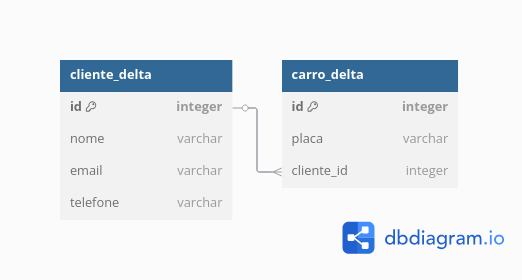

Delta Lake com Apache Spark
Este documento apresenta o uso do Delta Lake com Apache Spark em um cenário de gerenciamento de clientes e veículos.
Modelo de Dados
O sistema utiliza duas tabelas principais:
cliente_delta: armazena informações dos clientes.carro_delta: armazena os veículos, associados aos clientes.
Modelo ER
Abaixo, o modelo entidade-relacionamento utilizado:

Fonte dos Dados
Os dados utilizados neste projeto são fictícios e representam clientes e veículos de uma locadora.
Criação das Tabelas
CREATE TABLE cliente_delta (
id INT,
nome STRING,
email STRING,
telefone STRING
) USING delta;
CREATE TABLE carro_delta (
id INT,
placa STRING,
cliente_id INT
) USING delta;
Inserção de Dados
INSERT INTO cliente_delta VALUES
(1, 'Ana Souza', 'ana@email.com', '(11) 91234-5678'),
(2, 'Bruno Lima', 'bruno@email.com', '(21) 99876-5432'),
(3, 'Carla Mendes', 'carla@email.com', '(31) 98765-4321');
INSERT INTO carro_delta VALUES
(1, 'XYZ1J34', 1),
(2, 'RLC5B93', 2),
(3, 'ABC9Z88', 1);
Atualização de Dados
UPDATE cliente_delta
SET telefone = '(11) 90000-0000'
WHERE id = 1;
Exclusão de Dados
DELETE FROM carro_delta
WHERE id = 2;
Histórico Delta Lake
from delta.tables import DeltaTable
cliente = DeltaTable.forPath(spark, "./spark-warehouse/cliente_delta")
cliente.history().show(truncate=False)